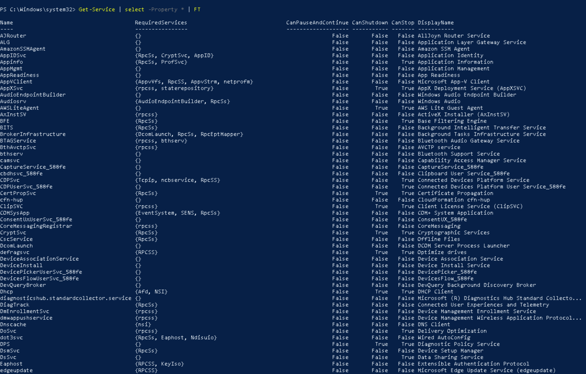

Windows Services
50%
Part 1: Explore Windows Services with the Service Control Manager
In this part of the lab, you will explore Windows Services using the Service Control Manager.
- On the Windows taskbar, click the Search icon and type services, then select the Services Desktop App to open the Service Control Manager (SCM).
- At the bottom of the SCM window, select the Standard tab.In the Service Listing Pane (right), you should see the following headers:
Name: The display name and sometimes even the service name in parentheses.
Description: Details about the service.
Status: A service will be Running or blank.
Startup Type: A service will be either Automatic, Manual, or Disabled.
Log On As: The credentials used by the service.
Note: The Startup Type may also designate Delayed Start, Trigger Start, or both. Delayed Start means that the service will start after the boot process. This delay improves boot performance. Services with a Trigger Start sit dormant until some other event or service wakes them up.
The default sort is by the Display Name header, but you can click on any header to sort services. - Click the Status column header to sort the services list by Running or blank.
The initial sort will be blank, then Running. Click Status again to reverse the sort. - Click the Startup Type column header.
Take note of any services with a Startup Type of Automatic that are not Running. You will need this information to answer one of the questions on the Tasks tab. - Sort the services by Name (A-Z).
- Right-click the Background Intelligent Transfer Service and select Properties to open the Background Intelligent Transfer Service (Local Computer) Properties window.
You should see four tabs: General, Log On, Recovery, and Dependencies.The General tab shows the Service Name, Display Name, and the Description.
Under that is the Path to executable, which shows the location and name of the executable along with any startup parameters.
Under the path is the Startup type, which you can set to Automatic, Automatic Delayed, Manual, or Disabled.Under the Startup type drop-down is the Service status. Here, you can choose to Start a stopped service, Stop a running service, Pause a running service, or Resume a paused service.
Lastly, a text field for Startup parameters is used if you manually start a service.
Note: Startup Parameters should match the Path to executable section parameters. - Click the Log On tab.The Log On tab is where we set the credentials used for the service. A service will either use the Local System Account or another account set by the administrator. In a perfect world, every service would have a separate account with just enough rights to perform the required tasks. In the real world, most services run as the Local Service Account, which is a very powerful account.
- Click the Recovery tab.The Recovery tab is used to take actions when a service stops. Typically, a service will be retried two times, and then no action will be taken. Notice that you can even run a custom program when a service fails. While one may be tempted to make changes here, the default settings are generally correct for most services.
- Click the Dependencies tab.As the name suggests, this tab shows what system components this service requires. This tab is useful when troubleshooting a stopped service that should be running.
- Close the Background Intelligent Transfer Service (Local Computer) Properties window.
- In the navigation pane (left), right-click Services (Local), and select Connect to another computer.This feature allows you to connect to another computer (assuming you have permission) using the SCM, which can be used to manage service on remote systems if needed.
- Click Cancel to return to the SCM.
- Close the SCM.
Part 2: Explore Windows Services with PowerShell
In the next steps, you will explore Windows Services using PowerShell.
- Right-click the Windows Start icon and select Windows PowerShell (Admin).
When prompted, click Yes to continue. - At the PowerShell prompt, type Get-Service and press Enter to display a list of all Windows services.
The Status, Name, and DisplayName are shown in table format by default. - At the PowerShell prompt, type Get-Service | Where-Object Status -EQ "Running" and press Enter to get a list of running services.
- At the PowerShell prompt, type Get-Service | Where-Object Status -NE "Running" and press Enter to see services in other states (Starting, Stopped, Paused).
- At the PowerShell prompt, type Get-Service | select -Property * | FT and press Enter to display all available properties for Windows services in PowerShell.Note: If you don't see all the table columns, make the PowerShell widow wider and re-run the command.
The FT stands for Format Table, making it easier to read the output. Notice that the path to the service executable is not shown in any of this output. It was easy to find the service path using SCM. How can we find it using the command line?
To find the service path from a the command line, we must use Windows Management Instrumentation Command (WMIC). - At the PowerShell prompt, type wmic service | more and press Enter to see all the available service information WMIC provides.
Hit the space bar to page through the information (or press q when done).Although messy, you can see that the service path is viewable in the output. Next we will learn how to pull out the service details we want using the get and where clauses.
Here is a list of the available service details we can pull from wmic using the get clause:
AcceptPause, AcceptStop, Caption, CheckPoint, CreationClassName, DelayedAutoStart, Description, DesktopInteract, DisplayName, ErrorControl, ExitCode, InstallDate, Name, PathName, ProcessId, ServiceSpecificExitCode, ServiceType, Started, StartMode, StartName, State, Status, SystemCreationClassName, SystemName, TagId, WaitHint - At the PowerShell prompt, type wmic service get name,pathname and press Enter to see all services and their associated executable path.
We can use the where clause to filter the wmic output. Scroll up to the top of the list and review the results.
Take note of the executable path for the ALG service. You will need this information to answer one of the questions on the Tasks tab. - At the PowerShell prompt, type wmic service where Started=True get name,pathname and press Enter to filter on running services.
- At the PowerShell prompt, type wmic service where Started=False get name,pathname and press Enter to filter on non-running services.
- At the PowerShell prompt, type wmic service get name,displayname,started,processid,pathname and press Enter to display additional details about each service, including the Process ID.
Notice that only running services have a Process ID.
Part 3: Explore Unquoted Service Paths
As discussed in the Core Concepts, hackers will attempt to find vulnerable services with unquoted service paths. As an administrator, you should know if this attack vector exists. In this part of the lab, you will run a command to check for unquoted service paths. You will then create your own unquoted service path.
- At the PowerShell prompt, type cmd and press Enter to switch to the command prompt.
- At the command prompt, type the following command and press Enter to check for unquoted service paths.
wmic service get name,pathname,startmode | findstr /i "auto" | findstr /i /v "c:\windows\\" | findstr /i /v """This command breaks down as follows:
wmic service get name,pathname,startmode - List the service name, path, and start mode.
findstr /i "auto" - Look for services that are set to start automatically.
findstr /i /v "c:\windows" - Ignore C:\Windows as it is not writable.
findstr /i /v """ - Look for unquoted paths.
Note: There is a file on the Desktop called Find Unquoted Service Paths.txt with this command inside. Feel free to copy and paste.
After running the command, you should find that it returns no results, which means it did not identify any unquoted service paths. To further demonstrate how this command works, we will now create our own unquoted service path. - At the command prompt, type exit and press Enter to return to the PowerShell prompt.
On the Desktop are two executables: WindowsService1.exe and EvilWindowsService.exe. These are simple Windows Services created using C#. Both services send messages to the Application Log every ten seconds. - At the PowerShell prompt, type cd C:\Users\cybrary\Desktop and press Enter to change your current directory to the Desktop.
- At the PowerShell prompt, type mkdir "C:\Program Files\my service" and press Enter to create a new directory titled my service.
- At the PowerShell prompt, type copy WindowsService1.exe "C:\Program Files\my service" and press Enter to copy the WindowsService1.exe to the "my service" directory.
- At the PowerShell prompt, type New-Service -Name MyService -BinaryPathName "C:\Program Files\my service\WindowsService1.exe" and press Enter to create a new Windows service called "MyService" that runs C:\Program Files\my service\WindowsService1.exe.You might be thinking, Wait a second I am using quotes in the BinaryPathName; how is this unquoted? The answer is that the quotes themselves are not included in the BinaryPathName.
To fix an unquoted service path, you will need to find the service in the Registry (HKEY_LOCAL_MACHINE\System\CurrentControlSet\Services), double-click on the name, and then edit the ImagePath by adding quotes to the path.
For the purposes of this lab, however, we want to create a vulnerable BinaryPathName. - At the PowerShell prompt, type Get-Service -Name MyService and press Enter.
You should see MyService exists, but is in the stopped state.
- At the PowerShell prompt, type Start-Service -Name MyService and press Enter to start the service.
Confirm using Get-Service. - At the PowerShell prompt, type eventvwr.msc and press Enter to open the Event Viewer.
- In the Event Viewer, navigate to Windows Logs / Application and look for the log entries with EventID 0 and the Source SimpleService.
Take note of the event message in the General tab. You will need this information to answer one of the questions on the Tasks tab.
Note: Leave the Event Viewer open during the next steps. - At the PowerShell prompt, type cmd and press Enter to switch to the command prompt.
- Use the WMIC command again to see if any additional unquoted service paths can be exploited.
You should find that C:\Program Files\my service\WindowsService1.exe is found by WMIC. This unquoted service path means an attacker with sufficient privilege can replace WindowsService1.exe with a malicious service titled C:\Program.exe or C:\Program Files\my.exe. - At the command prompt, type exit and press Enter to return to PowerShell mode.
- At the PowerShell prompt, type copy EvilWindowsService.exe C:\Program.exe and press Enter to copy the EvilWindowsService.exe to the C:\ directory as a new file titled Program.exe.
- At the PowerShell prompt, type Stop-Service -Name MyService and press Enter to restart the service.
Confirm with Get-Service. - At the PowerShell prompt, type Start-Service -Name MyService and press Enter to restart the service.
Confirm with Get-Service.
Now that MyService has been restarted, it should be running using the malicious C:\Program.exe - In Event Viewer, click Action > Refresh and look for new log entries with EventID 0 and the Source SimpleService.
Take note of the event message in the General tab. You will need this information to answer one of the questions on the Tasks tab.
Summary
In this lesson, you explored Windows Services using the SCM and PowerShell. You created MyService with an unquoted service path and used WMIC to detect this flaw. You then replaced WindowsService1.exe with EvilWindowsService.exe by exploiting the unquoted service path. Be sure to answer the questions on the Tasks tab, then continue to the optional Challenge Exercise.